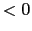
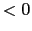

Next: Acoustic Modeling Algorithms for Up: Robust Speaker Diarization System Previous: Models Training Using CV-EM Contents
When computing the BIC metric between two clusters it was observed that small amounts of non-speech data affect negatively the speaker models and therefore could create errors when deciding wether to merge them or not. A new technique called frame-based cluster purification is introduced to modify the cluster models for the BIC comparison step in order to obtain more discriminant models. It is explained in detail in section 4.3.1.
It has also been observed that some clusters contain speaker segments from more than one speaker. The models associated with these clusters are able to model both speaker correctly and therefore cause a problem when comparing with other clusters containing either one of those speakers, leading to potentially serious decrease of performance due to erroneous cluster merges. For this reason, and during the initial iterations of the segmentation and clustering algorithm, a segment-level cluster purification algorithm aims at detecting speaker segments that are very dissimilar to the cluster they belong to, and assign them to a new cluster. A further description of the algorithm is given in section 4.3.2.
In order to save some computation when computing the  BIC
metric among all possible pairs, a pruning algorithm was
implemented in broadcast news that would not compute the
BIC
metric among all possible pairs, a pruning algorithm was
implemented in broadcast news that would not compute the
 BIC for those pairs that had previously obtained a
negative value. For the meetings system this was revisited and it
was observed on development data that, specially during the
initial iterations of the algorithm, the
BIC for those pairs that had previously obtained a
negative value. For the meetings system this was revisited and it
was observed on development data that, specially during the
initial iterations of the algorithm, the  BIC metric would
oscillate between small positive and negative values for some
clusters until they would finally stabilize its assigned data. By
using such a restrictive pruning, the system does not allow such
clusters to eventually merge, even though they might be from the
same speaker.
BIC metric would
oscillate between small positive and negative values for some
clusters until they would finally stabilize its assigned data. By
using such a restrictive pruning, the system does not allow such
clusters to eventually merge, even though they might be from the
same speaker.
For this reason the pruning algorithm was relaxed to eliminate a
cluster pair from further comparisons only if its  BIC
value falls below a certain threshold (), much safer to use.
Such threshold was set to -100 as it was seen that
BIC
value falls below a certain threshold (), much safer to use.
Such threshold was set to -100 as it was seen that  BIC
values below this threshold would always remain negative
throughout the process and therefore there is no chance of
eliminating any potential merge pair.
BIC
values below this threshold would always remain negative
throughout the process and therefore there is no chance of
eliminating any potential merge pair.
As in the broadcast news system, the cluster pair with the biggest
 BIC value is merged into a common cluster. The resulting
model is the union of both merged models. If none of the cluster
pairs obtains a positive
BIC value is merged into a common cluster. The resulting
model is the union of both merged models. If none of the cluster
pairs obtains a positive  BIC value, no merging takes place
and the system prepares to finish, as it failed the stopping
criterion.
BIC value, no merging takes place
and the system prepares to finish, as it failed the stopping
criterion.
In the Meetings system only the local  BIC stopping
criterion is used as tests using a likelihood criterion (in the
same way as in the broadcast news system) resulted in worse
performance.
BIC stopping
criterion is used as tests using a likelihood criterion (in the
same way as in the broadcast news system) resulted in worse
performance.
When the system's stopping point is reached, the algorithm does a final post-processing in order to output a final clustering. During the iterative merging process the minimum speaker turn duration is set to be 3 seconds. This is necessary when there are many clusters, each containing small amounts of data, as the corresponding models can fluctuate a lot and not model the speaker appropriately.
Once the system determines to stop merging, the optimum amount of clusters has been reached and the models are expected to contain enough data to model each speaker appropriately. At this point, a single Viterbi segmentation iteration is performed where the minimum duration is set to 1.5 seconds in order to allow the output segmentation to contain smaller speaker turns, given that in meetings the average speaker turn duration is smaller than in broadcast news, as seen in section 3.2.
user 2008-12-08